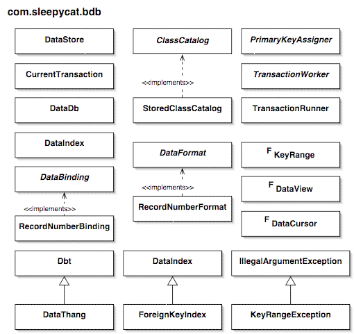

- Berkeley DB Reference Guide:
- Java API


|
|

A DbEnv manages the resources for one or more data stores.
A Db objects represent a single database and are created with a reference to the environment. An access method must be chosen for each database.
DataStore and DataIndex objects are created to wrap the database objects for use as a primary store or index. Data stores and data indices are then used to create collection views, as described in the com.sleepycat.bdb.collection package.
Once you have an environment, one or more data stores and data indices, and one or more collection views, you are ready to access (read and write) stored data. For a transactional environment, a transaction must be started before accessing data, and must be committed or aborted after access is complete. Java API provides several ways of managing transactions.
The recommended technique is to use the TransactionRunner class along with your own implementation of the TransactionWorker interface. TransactionRunner will call your TransactionWorker implementation class to perform the data access or work of the transaction. This technique has the following benefits:
If you don't want to use TransactionRunner , the alternative is to use the class CurrentTransaction .
If you choose to use CurrentTransaction directly you must handle the DbDeadlockException exception and perform retries yourself. Also note that CurrentTransaction may only be used in a transactional environment.
The Java API supports nested transactions. If TransactionRunner.run(com.sleepycat.bdb.TransactionWorker) or CurrentTransaction.beginTxn() is called while another transaction is active, a child transaction will be created. When TransactionRunner.run(com.sleepycat.bdb.TransactionWorker) returns, or when CurrentTransaction.commitTxn() or CurrentTransaction.abortTxn() is called, the parent transaction becomes active again. Note that because only one transaction is active per-thread, it is impossible to accidentally use a parent transaction while a child transaction is active.
The Java API also supports transaction auto-commit and dirty-read via the StoredCollections class.
If auto-commit is enabled for a collection or for the entire DbEnv , a transaction will be started and committed automatically for each write operation if no transaction is already active. See StoredCollections for how to create an auto-commit collection and DbEnv.setFlags for how to set auto-commit for an entire environment.
When dirty-read is enabled for a collection, data will be read that has been modified by another transaction but not committed. Using dirty-read can improve concurrency since reading will not wait for other transactions to complete. For a non-transactional container, dirty-read has no effect. See StoredCollections for how to create a dirty-read collection.
When a transaction is aborted (or rolled back) the application is responsible for discarding references to any data objects that were modified during the transaction. Since Java API treats data by value, not by reference, neither the data objects nor Java API objects contain status information indicating whether the data objects are 1- in sync with the database, 2- dirty (contain changes that have not been written to the database), 3- stale (were read previously but have become out of sync with changes made to the database), or 4- contain changes that cannot be committed because of an aborted transaction.
For example, a given data object will reflect the current state of the database after reading it within a transaction. If the object is then modified it will be out of sync with the database. When the modified object is written to the database it will then be in sync again. But if the transaction is aborted the object will then be out of sync with the database. References to such objects should no longer be used. When these objects are needed later they should be read fresh from the database.
When an existing stored object is to be updated, special care should be taken to read the data, then modify it, and then write it to the database, all within a single transaction. If a stale data object (an object that was read previously but has since been changed in the database) is modified and then written to the database, database changes may be overwritten unintentionally.
When an application enforces rules about concurrent access to specific data objects or all data objects, the rules described here can be relaxed. For example, if the application knows that a certain object is only modified in one place, it may be able to reliably keep a current copy of that object. In that case, it is not necessary to reread the object before updating it. That said, if arbitrary concurrent access is to be supported, the safest approach is to always read data before modifying it within a single transaction.
Similar concerns apply to using data that may have become stale. If the application depends on current data, it should be read fresh from the database just before it is used.
For each data store and secondary index you must choose from one of the access methods in the table below.
The access method determines not only whether sorted keys or duplicate keys are supported, but also what types of collection views may be used and what restrictions are imposed on the collection views.
| Access Method | Ordered | Duplicates | Record Numbers | Berkeley DB Type | Berkeley DB Flags |
|---|---|---|---|---|---|
| BTREE-UNIQUE | Yes | No | No | Db.DB_BTREE | None |
| BTREE-DUP | Yes | Yes, Unsorted | No | Db.DB_BTREE | Db.DB_DUP |
| BTREE-DUPSORT | Yes | Yes, Sorted | No | Db.DB_BTREE | Db.DB_DUPSORT |
| BTREE-RECNUM | Yes | No | Yes, Renumbered | Db.DB_BTREE | Db.DB_RECNUM |
| HASH-UNIQUE | No | No | No | Db.DB_HASH | None |
| HASH-DUP | No | Yes, Unsorted | No | Db.DB_HASH | Db.DB_DUP |
| HASH-DUPSORT | No | Yes, Sorted | No | Db.DB_HASH | Db.DB_DUPSORT |
| QUEUE | Yes | No | Yes, Fixed | Db.DB_QUEUE | None |
| RECNO | Yes | No | Yes, Fixed | Db.DB_RECNO | None |
| RECNO-RENUMBER | Yes | No | Yes, Renumbered | Db.DB_RECNO | Db.DB_RENUMBER |
Please see Available Access Methods for more information on access method configuration.
The restrictions imposed by the access method on the database model are:
See the com.sleepycat.bdb.collection package for more information on how access methods impact the use of stored collections.
|
|
Copyright (c) 1996-2003 Sleepycat Software, Inc. - All rights reserved.